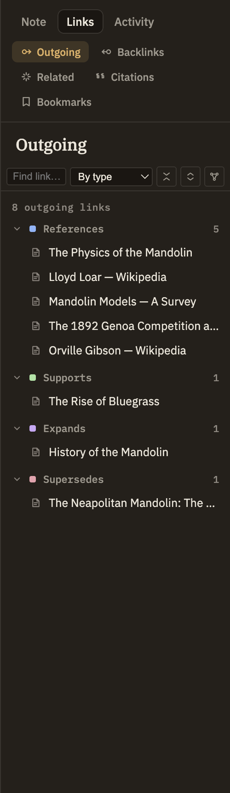

Docs/Right sidebar/Outgoing links
Outgoing links
The Outgoing links panel lists every link the current note points to — the notes it references, not the notes that reference it. It's the mirror image of Backlinks, read in the opposite direction. Click any row to open that note.
What's in the list
Each link in the note becomes a row showing the title of the note it points to.
By default, links are grouped by type — each group has a colored marker, a label, and a count, matching the color that type shows in the note itself. Collapse a group to tidy it away, or use the toolbar buttons to expand or collapse them all at once. Switch the sort control to Alphabetical to see one title-sorted list instead, with a small type badge on each row.
The toolbar also has a filter field to narrow the list to targets whose title contains what you type, and a button to view the note's links as a graph instead of a list.

Links to sources
Some links point to a source in your bibliography rather than to a note. This panel treats every link as if it points to a note, so a link to a source appears here as a broken row. To browse links to your sources, use the Citations panel instead.
When there's nothing to show
A note with no links shows "No outgoing links." If you've typed a filter and nothing matches it, you'll see "No matches" instead.